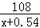
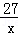

2014年北京市中考数学试题 · 数学解答题 第18题 · 对应解析
18．（5分）（2014•北京）列方程或方程组解应用题：
小马自驾私家车从A地到B地，驾驶原来的燃油汽车所需油费108元，驾驶新购买的纯电动车所需电费 27元，已知每行驶1千米，原来的燃油汽车所需的油费比新购买的纯电动汽车所需的电费多0.54元，求新购买的纯电动汽车每行驶1千米所需的电费．
考点： 分式方程的应用．菁优网版权所有
分析： 设新购买的纯电动汽车每行驶1千米所需的电费为x元，则原来的燃油汽车所需的油费为（x+0.54）元，根据驾驶原来的燃油汽车所需油费108元，驾驶新购买的纯电动车所需电费27元，所行的路程相等列出方程解决问题．
解答： 解：设新购买的纯电动汽车每行驶1千米所需的电费为x元，由题意得

=
解得：x=0.18
经检验x=0.18为原方程的解
答：纯电动汽车每行驶1千米所需的电费为0.18元．
点评： 此题考查分式方程的应用，找出题目蕴含的数量关系，列出方程解决问题．
四、解答题（本题共20分，每小题5分）